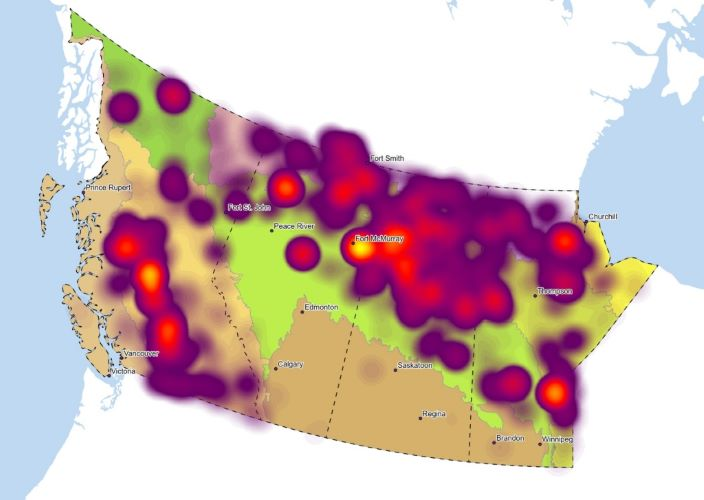

Geovisualization is a process of using interactive visualization techniques to analyze and display geographic data. It allows us to explore and understand spatial patterns, relationships, and trends that are not easily discernible from traditional maps or tables. Two examples of geovisualization are shown. The above map is a color landuse map of Lindsay. The below map is a heatmap showing wildfire happened in Western Canada in past decade.Heat map is a powerful tool for visualizing the density of points on a map.
Maps are being used in various ways, it helps people to navigate through the landscape, or support decision-making processes in government, commercial, consulting and etc. Here are some examples: 1. Government: During the COVID-19 pandemic, Google Maps Platform was used to provide up-to-date information on business hours and COVID-related services. 2. Commercial: Google Maps Platform provides developers with business information, ratings, reviews, and more for over 200 million businesses and places around the world. 3. Consulting: Geovisualization can be used to help clients understand complex geospatial data and make decisions.